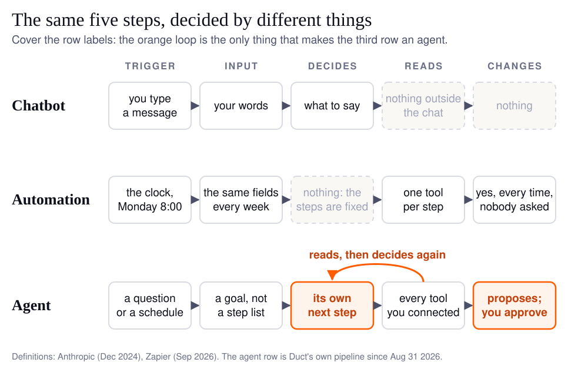

An automation runs a fixed list of steps when something triggers it. A chatbot answers what you type, then waits. An AI agent is given a goal, decides its own next step, reads whatever tools it needs, and can act, usually behind an approval. Three questions tell them apart: does it choose its own next step, does it read more than one source, and can it change something.
You probably have all three on your desk already. A Zapier flow that posts last week's spend to Slack on Monday morning. A ChatGPT tab where you paste a screenshot and ask why signups dipped. And a vendor deck in which every slide says "agent", including the pricing one. The words are used so loosely that the deck could be describing any of the three, and the price is very different for each.
I know the confusion from the inside, because I shipped the wrong one and called it the right thing. Duct's first insights pipeline, built in April 2026, was a wizard: four steps when it shipped, six by August. You picked the connectors, the ad account, the analytics property, a goal from a list, and the model got at most eight pre-chosen tools and a fixed output template. On August 31 the design note I wrote to replace it opened with a sentence I still find a little embarrassing:
The current insights agent is not an agent. It is a two-call pipeline wearing an agent's vocabulary.
Every decision worth making had been made before the model ran, which is the definition of an automation. A fine thing to be; not an agent. This post is the test I should have applied earlier, the weekly growth report done all three ways, and the exact line in Duct's code where "agent" stops and "automation" takes over.
What is the difference between an AI agent, a chatbot and an automation?
The difference is who decides the next step: a person wrote it down in advance (automation), a person types it each time (chatbot), or the software works it out from a goal (agent).
The cleanest definitions I have found come from Anthropic's Building effective agents, from December 2024: "Workflows are systems where LLMs and tools are orchestrated through predefined code paths", whereas "agents, on the other hand, are systems where LLMs dynamically direct their own processes and tool usage". Zapier's own AI vs. automation page, updated in September 2026, puts the first one in plainer words: "Automation runs on predefined rules: when X happens, do Y."
A chatbot is the odd one out, because it is defined by its interface rather than its decision-making. TechTarget's AI agent vs. chatbot has it as "a software program that interacts with human users conversationally". It can run on the same language model as an agent. What makes it a chatbot is that it stops after every answer and waits for you.
| Chatbot | Automation | AI agent | |
|---|---|---|---|
| Trigger | you type a message | a clock or an event | a question, or a schedule |
| Input | your words | the same fields every time | a goal |
| Decides the next step | what to say, then waits | nothing, the steps are fixed | yes, from what it just read |
| Reads several tools | no, only the chat | one tool per step, as wired | every tool it is connected to |
| Changes something | no | yes, every run, nobody asked | proposes; a person approves |
| Fails how | confidently, in prose | silently, with a wrong number | by stopping and saying what it could not verify, if it is built well |
| Costs | a subscription | cents per run | a model bill per run, and minutes rather than seconds |
The last row is the honest one. An agent is the most expensive and the slowest of the three, and a lot of jobs do not need it.
The three-question test
Ask three questions of any tool, demo or slide. Two "yes" answers out of three is an agent; fewer is one of the other two, whatever the label says.
- Does it choose its own next step? Watch what happens when the first result is surprising. An automation carries on to step four. A chatbot asks you what to do. An agent goes and reads something it was not told to read.
- Does it read more than one source? A chatbot reads the chat. An automation reads one tool per step, in the order someone wired. An agent reads whatever the question needs, and the useful ones say which sources they could not reach.
- Can it change something, and who says yes? A chatbot cannot touch your ad account. An automation changes things without asking, which is the point of it. An agent should be able to propose a change and should not be able to apply the risky ones itself. If the demo never shows an approval step, ask where it is.

The vendor tell is question one. A demo that shows a long list of steps happening on their own is showing an automation. The agent is the moment the list changes because of what step two found.
The Monday growth report, done three ways
The job is the same every week: read Google Ads, GA4, Search Console and Stripe, say what moved and why, and say what to do about it. What differs is what each form can notice.
| Chatbot | Automation | AI agent | |
|---|---|---|---|
| Monday morning | you paste four screenshots | a message arrives at 8:00 with last week's numbers | you ask one question, or a cron job requests the brief |
| "Why did signups drop?" | it guesses from the screenshots | it does not know a question was asked | it reads the landing pages, the campaigns and the funnel, then answers |
| A number is wrong | it explains the wrong number fluently | it sends the wrong number, nicely formatted | it checks the number before using it, or says it could not |
| "Pause that campaign" | it tells you how | a step could do it, every time, unasked | it proposes the pause; you approve it |
| What you still do | the reading | the thinking | the approving |
The row that matters is the third one, and I have a number for it. Duct's integrity checks are modelled on a Google Ads engagement where, by that project's own accounting, 60% of 93 turns in a month went on establishing whether a number could be trusted at all, and 16% on actually improving anything. Every serious defect found that month looked healthy on a dashboard: an experiment "running" with nobody bucketed for 74 days, a tag that "fired" but failed at runtime, and 23 of 36 "upgrades" coming from seven QA accounts in one country.
An automation would have posted those 36 upgrades to Slack every Monday. A chatbot would have written a cheerful paragraph about them. Catching them took something that decided, on its own, to look at where the upgrades came from. A dashboard renders a corrupt number in the same font as a correct one, and so does an automation.
Where does "agent" end and "automation" begin in real code?
In Duct it ends at a tool that does not exist. The agent can propose a change and inspect its status; there is no tool it can call to approve or apply one.
Files rather than adjectives here, because this is the part of the test a demo can fake and a repository cannot. Two things changed on August 31 when the wizard went.
The first is who decides what to read. The old pipeline's model chose among at most eight pre-bound tools with no arguments. The new one, in backend/agents/insights/prompts/autonomous.py, is told it "decides for itself what to look at", carries a trust protocol that says "never present a figure you did not fetch or were not given", and can ask you a question mid-run when a connector is missing. The unattended brief, the one a cron job can request on Monday morning (Duct has the entry point and does not yet own the clock), is the same agent with the same tools and one difference: nothing that can pause is mounted, because there is nobody at the keyboard, so a question it cannot ask becomes a stated assumption in the brief.

The second is who decides what to change. The agent's execution tools are in backend/agents/tools/execution_tools.py, and the docstring is the whole policy in one line:
There is no approve or apply tool — approval is human-only by construction.
What may apply without a click is decided once, in policy.py: a short allowlist of reversible edits such as adding negative keywords or creating a GA4 audience, and only when you have set the project's autonomy to assisted or auto. Budget and bid changes stay off that list because they move money. Anything destructive, such as publishing a Tag Manager version, waits for a person at every level. A test file holds all of that in place, so a future prompt change cannot quietly widen it.
So the three questions, answered for Duct's own agent: it chooses its next step (yes, since August 31), it reads across every connected tool (yes), and it can change things (it can propose; you apply). The rest of the harness around that model, the limits, the memory and the evals, is a longer story, and it is in What is harness engineering?. The approval step gets its own guide: human in the loop for agents that can spend your budget.
When is automation the better choice?
When the steps never change and the inputs can be trusted, automation wins on cost, speed and predictability, and you should not let anyone talk you out of it.
Anthropic's advice in the same post: "we recommend finding the simplest solution possible, and only increasing complexity when needed." Zapier says automation "is great for replacing repetitive or mundane tasks", and Make's AI agent vs chatbot describes agents as "a decision layer on top of your existing deterministic automation" rather than a replacement for it. That is the right picture. Keep the Zap that posts the numbers. Put the agent on the question the Zap cannot ask.
My rule, after running both on Duct's own accounts since August: an automation for anything you could write down as a checklist and hand to a new hire on day one; an agent for the Monday question that is different every Monday. And the limit I should admit: an agent brief takes minutes where a Zap takes seconds, and every run is a line on your model bill. For a report whose numbers you already trust, that is money spent on judgment you did not need.
FAQ
Is ChatGPT an AI agent?
By default, no. ChatGPT is a chatbot: it answers what you type and waits for the next message. It becomes agent-like when it is given tools and a goal, such as browsing or calling an API across several steps. The model is the same either way; what changes is the software around it, the harness.
Is a Zapier workflow an AI agent?
No, and that is its strength. A Zap runs a fixed sequence of steps whenever its trigger fires, with no judgment in between, so it is cheap, fast and predictable. Adding an AI step that classifies a ticket does not make it an agent; the step after it still runs regardless of what the AI said.
What can an AI agent do that automation cannot?
Change its plan because of what it just read. An automation carries on to the next wired step whatever the data says. An agent can notice that 36 "upgrades" came from seven test accounts, go and check the countries, and say so before anyone acts on the number. It can also propose a change and wait for a person to approve it.
How do I know a vendor's "agent" is really one?
Ask to see the moment the plan changed. A demo that shows many steps happening on their own is showing an automation. Then ask where approval lives: an agent that can spend your money should be able to propose but not apply the risky changes, and that rule should be in code, not in a prompt the model can be talked out of.
When should I use automation instead of an agent?
When the steps are the same every time and the inputs are already trusted. Automation costs cents, runs in seconds and never surprises you. Use an agent for the question that is different every week, or for data that lies quietly, where the first job is deciding whether a number can be trusted at all.